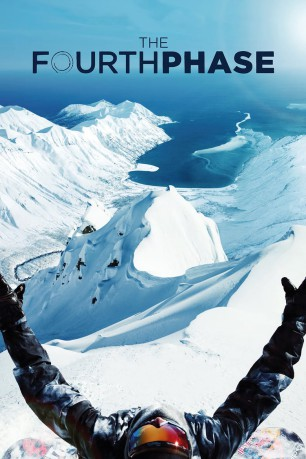

#10672 The Fourth Phase
 
 IMDB-Wertung: 7.1 / 10
IMDB-Wertung: 7.1 / 10  Metascore: 0
Metascore: 0 
Über vier Jahre hat der professionelle Snowboarder Travis Rice Filmmaterial gesammelt. Der Spitzensportler war bereits selbst Gegenstand der Dokumentation “The Art of Flight“, die 2011 veröffentlicht wurde. Diese Erfahrung hat Rice inspiriert, seinen persönlichen Blick auf den Sport zu werfen. Dabei verfolgt er in einer abenteuerlichen Reise über 26.000 Kilometer den Wasserkreislauf – von eisigen Gletscherspitzen bis zu den unendlichen Weiten des Meeres. Neben atemberaubenden Snowboarding-Aufnahmen wirft die Dokumentation einen frischen Blick auf das faszinierende Element Wasser und zeigt dessen Bedeutung für das Leben auf unserem Planeten auf. Mit dabei sind Snowboard-Größen wie Mark Landvik, Eric Jackson und Jeremy Jones. Sportdoku über den legendären Snowboarder Travis Rice.
Jahr: 2016
Dauer: 92 Minuten
FSK: 12
Land: Österreich Studio: Studio Hamburg EnterprisesTonspuren: DD5.1 - ,
Untertitel:
Auflösung: 1080p (1920x1040) Größe: 5017 MB
Genre: Action, Abenteuer, Dokumentation, Sport
Regisseur: Jon Klaczkiewicz
Drehbuch: Melissa Larsen
Soundtrack: Piers Baron, Kishi Bashi, Ben Chatwin
Darsteller:
- Travis Rice als Himself
- Mikkel Bang als Himself
- Shin Biyajima als Himself
- Ben Ferguson als Himself
- Cam FitzPatrick als Himself
- Bryan Iguchi als Himself
- Eric Jackson als Himself
- Jeremy Jones als
- Mark Landvik als Himself
- Victor de Le Rue als
- Bode Merrill als Himself
- Pat Moore als Himself
- Gerald Pollack als Narration
Datei: X:\Dokumentationen\Sport\Fourth Phase, The (2016, FSK12, 1920x1040).mkv seit 16.02.2019
Festplatte: HD Serien(SU-Z)+Dokus+Musik
 Es gibt insgesamt 34 Filme in der Gruppe 'Dokumentationen\Sport'
Es gibt insgesamt 34 Filme in der Gruppe 'Dokumentationen\Sport'